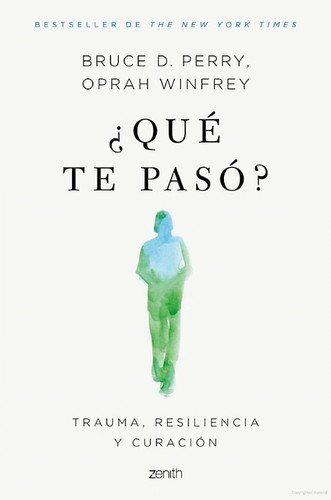

Libros de trauma, adversidad y recuperación
Libros de trauma, adversidad y recuperación en español: 14 libros completos para leer gratis aquí mismo y 19 fichas de títulos actuales.
Cuidarnos ante la adversidad: salud mental y resiliencia en contextos diversosFlores-Buils, Raquel
Cuidarnos ante la adversidad: salud mental y resiliencia en contextos diversosFlores-Buils, RaquelEl dueloMartín-Pozuelo Martín, Mónica; Sánchez, Alberto; Monfort, Jaume; Kulisevsky, Elena; Planellas, Irina
El dueloMartín-Pozuelo Martín, Mónica; Sánchez, Alberto; Monfort, Jaume; Kulisevsky, Elena; Planellas, IrinaDuelos migratorios y estrés aculturativo en la niñez y la adolescencia migrante. Un estudio etnográfico en Oaxaca, MéxicoRodríguez Cruz, Marta
Duelos migratorios y estrés aculturativo en la niñez y la adolescencia migrante. Un estudio etnográfico en Oaxaca, MéxicoRodríguez Cruz, MartaEl proceso de duelo y emocionesLópez, Jorge S.; Martín López, María Jesús; Martínez, José Manuel; Ratón Berlanga, Marta; Soria-Oliver, María; García Sánchez, Rubén
El proceso de duelo y emocionesLópez, Jorge S.; Martín López, María Jesús; Martínez, José Manuel; Ratón Berlanga, Marta; Soria-Oliver, María; García Sánchez, RubénAbuso y explotación sexual en adolescentes: violencia sexual en centros de acogimiento residencialArcajo Fuentes, Natalia; Galindo Pérez, Sara; Martín Gómez, Ángel; Gómez Rodilla, Israel; Calcedo Roda, Paula
Abuso y explotación sexual en adolescentes: violencia sexual en centros de acogimiento residencialArcajo Fuentes, Natalia; Galindo Pérez, Sara; Martín Gómez, Ángel; Gómez Rodilla, Israel; Calcedo Roda, PaulaPrácticas de recuperación para la salud mental y el bienestarOrganización Mundial de la Salud
Prácticas de recuperación para la salud mental y el bienestarOrganización Mundial de la SaludResiliencia, educación emocional y duelo. Formación para futuros docentesMATEU PÉREZ, ROSA; Escobedo Peiro, Paula; Flores Buils, Raquel
Resiliencia, educación emocional y duelo. Formación para futuros docentesMATEU PÉREZ, ROSA; Escobedo Peiro, Paula; Flores Buils, RaquelCómo ser resiliente ante la adversidad. Cuaderno de trabajo para el usuarioSerrano-Zárate, Berenice; De la Rosa Gómez, Anabel
Cómo ser resiliente ante la adversidad. Cuaderno de trabajo para el usuarioSerrano-Zárate, Berenice; De la Rosa Gómez, AnabelIntervención breve basada en psicología positiva para potenciar la resiliencia ante la adversidad. Guía para el profesionalSerrano-Zárate, Berenice; De la Rosa Gómez, Anabel
Intervención breve basada en psicología positiva para potenciar la resiliencia ante la adversidad. Guía para el profesionalSerrano-Zárate, Berenice; De la Rosa Gómez, AnabelMamitis y los traumas del desarrollo en una colonia popular de la ciudad de MéxicoGutmann, Matthew C.
Mamitis y los traumas del desarrollo en una colonia popular de la ciudad de MéxicoGutmann, Matthew C.El papel del educador en la prevención del abuso de las drogasVega Fuente, Amando; Mendoza Berjano, Ramón; Sagrera, I.
El papel del educador en la prevención del abuso de las drogasVega Fuente, Amando; Mendoza Berjano, Ramón; Sagrera, I.Duelo. Cómo afrontar la pérdidaJenaro Río, Cristina
Duelo. Cómo afrontar la pérdidaJenaro Río, CristinaEl psicólogo ante las crisis de la vidaTeresa Pont i Amenós
El psicólogo ante las crisis de la vidaTeresa Pont i AmenósTrastorno por estrés postraumático : naturaleza, evaluación y tratamiento (2009)Bados López, Arturo
Trastorno por estrés postraumático : naturaleza, evaluación y tratamiento (2009)Bados López, Arturo¿Qué te pasó?Bruce D. Perry y Oprah Winfrey
¿Qué te pasó?Bruce D. Perry y Oprah Winfrey
Sanar el traumaPeter A. Levine
Sanar el traumaPeter A. LevineEn Auschwitz no había ProzacEdith Eger
En Auschwitz no había ProzacEdith EgerEleanor Oliphant está perfectamenteGail Honeyman
Eleanor Oliphant está perfectamenteGail HoneymanLa bailarina de AuschwitzEdith Eger
La bailarina de AuschwitzEdith EgerOtras maneras de usar la bocaRupi Kaur
Otras maneras de usar la bocaRupi KaurEl mundo amarilloAlbert Espinosa
El mundo amarilloAlbert EspinosaAntifrágilNassim Nicholas Taleb
AntifrágilNassim Nicholas TalebHeridas emocionalesBernardo Stamateas
Heridas emocionalesBernardo StamateasSuperar la adversidad. El poder de la resilienciaLuis Rojas Marcos
Superar la adversidad. El poder de la resilienciaLuis Rojas MarcosSobre el duelo y el dolorElisabeth Kübler-Ross y David Kessler
Sobre el duelo y el dolorElisabeth Kübler-Ross y David KesslerCuando todo se derrumbaPema Chödrön
Cuando todo se derrumbaPema ChödrönVolar sobre el pantanoCarlos Cuauhtémoc Sánchez
Volar sobre el pantanoCarlos Cuauhtémoc SánchezEl cuerpo lleva la cuentaBessel van der Kolk
El cuerpo lleva la cuentaBessel van der KolkEl hombre en busca de sentidoViktor E. Frankl
El hombre en busca de sentidoViktor E. FranklEl mito de la normalidadGabor Maté
El mito de la normalidadGabor MatéLos patitos feos. La resiliencia: una infancia infeliz no determina la vidaBoris Cyrulnik
Los patitos feos. La resiliencia: una infancia infeliz no determina la vidaBoris CyrulnikSobre la muerte y los moribundosElisabeth Kübler-Ross
Sobre la muerte y los moribundosElisabeth Kübler-RossLas cinco heridas que impiden ser uno mismoLise Bourbeau
Las cinco heridas que impiden ser uno mismoLise BourbeauTemas relacionados
¿Estás eligiendo carrera?
Haz gratis el test de orientación vocacional de AURZANE: intereses, aptitudes, autoconcepto y hábitos de estudio, con informe completo.